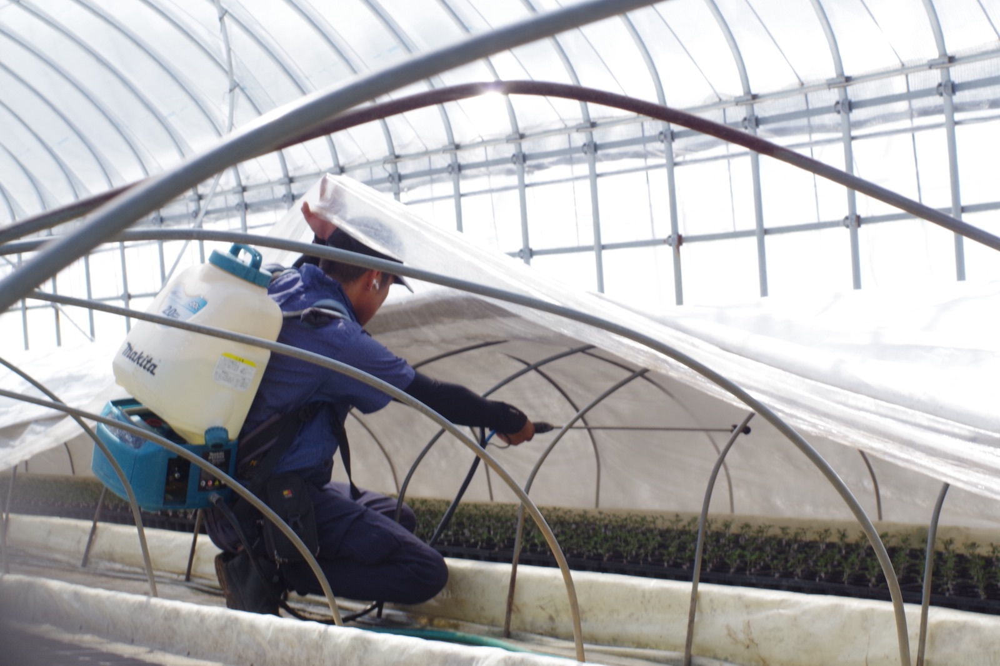

採用情報
良い苗は、良いチームから
プロ農家に使っていただく接ぎ木苗を、一緒に育てる仲間を探しています。正社員、パート・アルバイト、冬季限定アルバイトを募集中です。経験は問いません。

募集中の仕事
3つの働き方から選べます
正社員、パート・アルバイト、冬季限定アルバイトを募集しています。どれも未経験から始められます。気になる働き方を選んで、くわしい条件をご覧ください。
表示中
通年・フルタイム
正社員
野菜苗・花苗の育苗スタッフ
- 給与
- 月給215,200円〜
（試用期間6か月は200,000円） - 時間
- 8:00〜17:30（実働8時間）
- 休日
- 年間96日
- 待遇
- 社会保険完備・賞与年2回
パート・アルバイト
苗づくりの作業スタッフ
- 給与
- 時給1,200円〜
（試用期間6か月は1,100円） - 時間
- 1日3時間・週3日から
- 休日
- 希望を優先
- 待遇
- 扶養内OK・残業なし
冬季限定アルバイト
冬のあいだだけの短期のお仕事
- 給与
- 時給1,200円
- 時間
- 1日3時間・週3日から
- 期間
- 最長4か月
- 仕事
- 種まき・接ぎ木・鉢上げ
01
なぜ、いま
生産者の期待に、応えつづけたい
当別当育苗の接ぎ木苗は、県内外のプロの農家や企業に選ばれ、品質に高い評価をいただいています。業界最大手のメーカーが見学に来られることもあります。ご注文は年々増え、うれしいことに、お応えしきれないほどです。だからこそ、一緒に会社を育て、より多くの生産者の期待に応えていく仲間を探しています。
02
私たちの働き方
私たちが大事にする3つのこと
品質・効率・チームワーク。このどれか一つではなく、3つがかみ合って回ることが、良い苗づくりにつながると考えています。
01
品質を守る
いい苗をつくることが、すべての土台です。プロの農家に信頼される品質を、一つひとつの苗で守ります。
02
効率を高める
品質を守りながら、むだのない作業でつくる。多品目の苗を同時に、大量に育てるための工夫を続けています。
03
チームで支える
苗づくりはリレーです。一人の技術ではなく、チームの連携で、品質と効率を両立させます。
03
募集要項
正社員
未経験からプロの苗づくりを覚えていける仕事です。まずは職場見学だけでも受け付けています。
| 職種 | 野菜苗・花苗の育苗スタッフ（正社員） |
|---|---|
| 仕事内容 | 接ぎ木苗を中心とした、野菜苗の生産に携わる仕事です。 ・ビニールハウス内での育苗：苗の生育確認、水やり、温度・換気・遮光などの環境管理、病害虫の防除 ・生産準備：トレーや資材の準備、培土詰め、播種、鉢上げ（ポットへの移植） ・出荷：出荷容器の準備、苗詰め、運搬、トラックへの積み込み ・配達：完成した苗を農家やJAなどへ配送 育てる苗はスイカ・メロン・キュウリ・トマト・ナス・ピーマン類などの野菜苗と、パンジー・ビオラなどの花苗です。担当する役割は、適性とご希望に応じて決めます。 1年でひととおりの作業を覚え、3年目に自分で判断して動けるようになることが目標です。技術は代表や先輩が直接教えます。 ハウス内の作業が中心のため、夏は暑く冬は寒い環境です。 |
| 雇用形態 | 正社員（雇用期間の定めなし）。試用期間6か月。 |
| 給与 | 試用期間（入社から6か月）は月給200,000円。 試用期間後は月給215,200円〜（等級・経験により決定）。 ・昇給：年1回（等級制度に基づく評価による） ・賞与：年2回（7月・12月）。年間の標準は2.6か月分、最大3.5か月分 ・時間外手当、通勤手当（通勤距離に応じて支給、上限日額450円） 2027年1月から新しい賃金制度を始めます。「何ができるようになれば、いくらになるのか」を等級表として書面で示しています。月末締め、翌月第1週払い。 |
| 就業時間 | 8:00〜17:30（休憩90分／実働8時間）。繁忙期・閑散期で始業と終業の時刻が変わることがあります。 時間外労働あり（月平均10時間程度）。超えた分は時間外手当として支給します。 |
| 休日 | 年間休日96日（シフト制）。毎週決まった曜日の休みではなく、会社の年間カレンダーに沿って休みを取ります。 繁忙期の1〜5月（特に3月と4月）は休みが少なく、閑散期の6〜12月にまとめて取る形です。 年末年始（12月29日〜1月4日）とお盆（8月13日〜15日）は会社の休みです。年次有給休暇は法定どおり付与し、時間単位でも取得できます。 |
| 待遇・保険 | 社会保険完備（雇用・労災・健康・厚生年金）。退職金共済（勤続5年以上）。 マイカー通勤可、無料駐車場あり。定年60歳（希望者は65歳まで継続雇用）。屋内禁煙。 移住を検討される方には、町営住宅や空き家をご紹介します。 |
| 応募資格 | 普通自動車運転免許（配達業務があるため。AT限定可）。学歴・経験は問いません。未経験の方も歓迎します。 農業・園芸・造園の経験や、フォークリフト・けん引などの資格があれば歓迎します（必須ではありません）。AT限定の解除・準中型免許の取得費用の補助制度もあります。 |
| 勤務地 | 本社（鳥取県西伯郡大山町束積253-2）と、その周辺にある当社の育苗施設・圃場（いずれも大山町内）。配達で県内外に出ることがあります。転勤はありません。 |
| 選考の流れ | ご応募 → 職場見学（半日・無料）→ 課題シートのご提出 → 書類選考 → 代表による面接 → 内定 職場見学だけの参加も歓迎します。選考結果は面接後1週間以内にお知らせします。勤務開始日はご相談に応じます。 |
| 応募方法 | お電話（0858-58-5005）またはメール（tbt.seedling@gmail.com）でご連絡ください。「採用ページを見た」とお伝えいただければ大丈夫です。職場見学もいつでも受け付けています。 |
パート・アルバイト（1日3時間・週3日から）と、冬季限定アルバイトも募集しています。くわしくはパート・アルバイト募集のページをご覧ください。